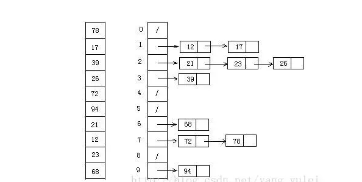

(1)算法简介
桶排序 (Bucket sort)的工作的原理：假设输入数据服从均匀分布，将数据分到有限数量的桶里，每个桶再分别排序（有可能再使用别的排序算法或是以递归方式继续使用桶排序进行排
(2)算法描述和实现
具体算法描述如下：
<1>.设置一个定量的数组当作空桶；
<2>.遍历输入数据，并且把数据一个一个放到对应的桶里去；
<3>.对每个不是空的桶进行排序；
<4>.从不是空的桶里把排好序的数据拼接起来。
